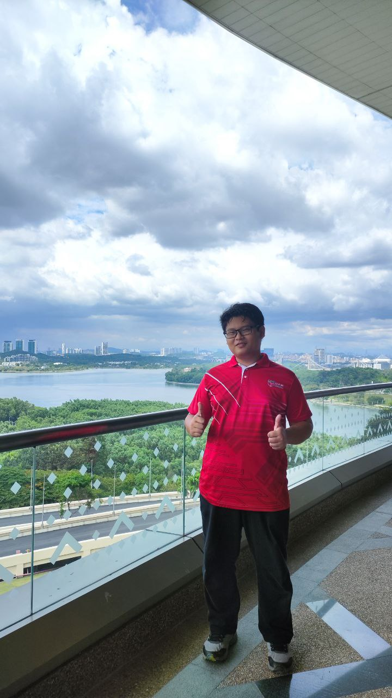

INTRODUCTION
Hi! I'm Amirul Hakimi bin Rosazlan, a 21-year-old from Ipoh, Perak. I’ve lived here all my life and grown to love its charm and comfort. It’s where I learned to value simplicity, family, and strong connections.
I'm currently studying at Universiti Putra Malaysia. Life at UPM has been exciting and full of learning experiences. It’s helped me grow both academically and personally.
In my free time, I enjoy playing video games and watching anime. Gaming helps me relax and connect with friends. Anime, on the other hand, inspires and entertains me with its unique stories.
Overall, I’m someone who’s curious and eager to learn. I believe in balancing studies with hobbies to stay happy and motivated. Thanks for getting to know me!